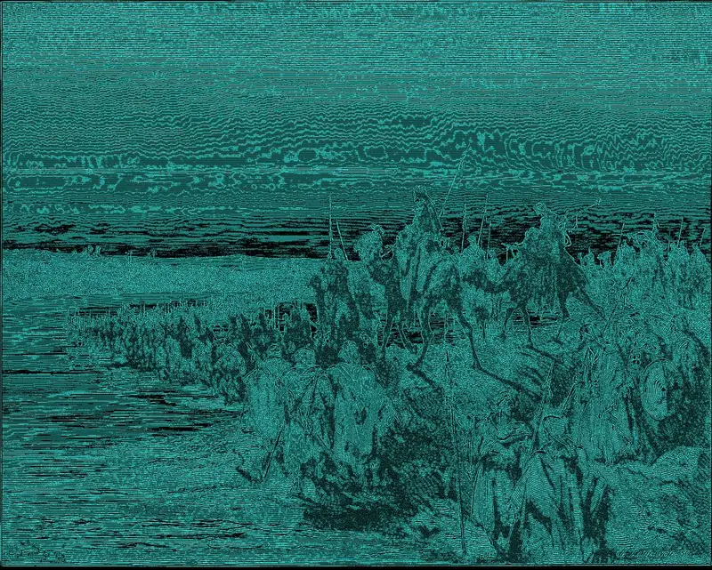

I
Disconnect from technology
The tower builds itself. Every tool demands another, and in the end nobody remembers why it was started. Our games have no shop, no streaks, and no reason to come back tomorrow other than wanting to.
Iterum Corporation exists for one thing only: that whoever plays puts the screen down a little more aware of why they picked it up.
We make technology, and we know what technology does to time, to attention, and to the people next to us. We don't reject it. We use it with intent: games that end, that get talked about with others, and that leave a question instead of a notification.
I
The tower builds itself. Every tool demands another, and in the end nobody remembers why it was started. Our games have no shop, no streaks, and no reason to come back tomorrow other than wanting to.





II
What matters happens face to face with someone real. We design so the game gets talked about, argued over and recommended out loud, not consumed alone against the clock.
III
Technology is neither good nor bad: it is a force you have to look in the eye. We want whoever plays to leave with a question about how and why they use what they use. And with the urge to switch the console off.


The purpose is played, not read. Singular is the first iteration.